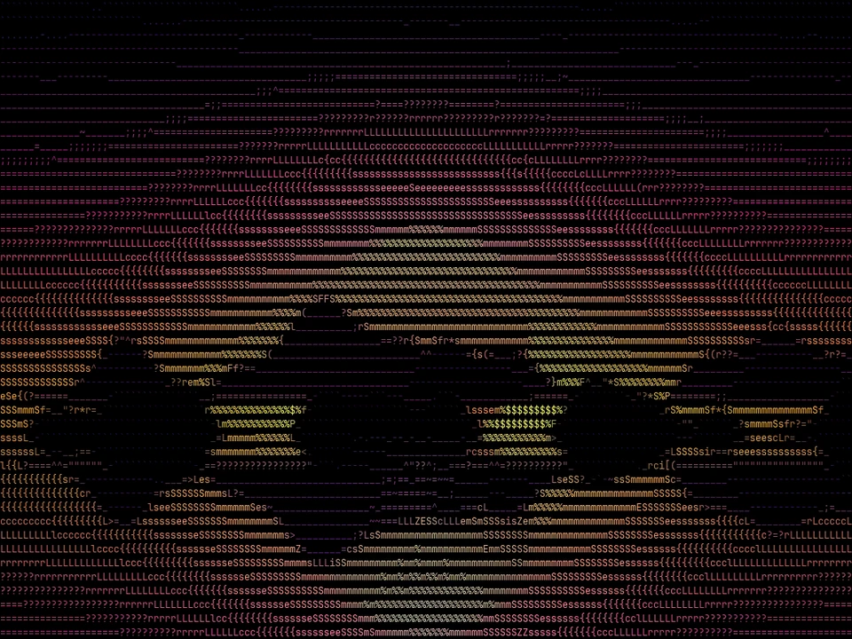

Arrastra y compara
Suelta una imagen y desliza el divisor para comparar el original con el arte ASCII.
Aplicación de escritorio · Windows
Arrastra una imagen, elige la calidad y exporta a TXT, HTML, SVG o PNG. También convierte video con audio y muestra tu webcam en vivo.

Original ASCIIFunciones
Pensada para que el resultado se vea bien a la primera y para afinarlo cuando quieras.
Suelta una imagen y desliza el divisor para comparar el original con el arte ASCII.
Fast, Balanced, High y Maximum. Cada uno ajusta la métrica (Brightness, MSE, SSIM) y el juego de caracteres.
ASCII, Shades, Blocks y Braille, o define el tuyo con hasta 256 símbolos.
Conserva el color de la imagen y elige fondo negro, blanco o transparente.
TXT (con color ANSI), HTML autónomo, SVG vectorial, PNG o directo al portapapeles.
Convierte un video a MP4 H.264 con arte ASCII, conservando el FPS original y el audio. Desde la línea de comandos.
Vista previa en tiempo real con calidad adaptativa para sostener los FPS que elijas.
Procesa carpetas completas, guarda perfiles y úsalo en tus scripts.
Cómo funciona
Un recorrido de 40 segundos por las funciones principales.
Suelta cualquier PNG, JPG, BMP, WEBP, TIFF o GIF.
Calidad, caracteres, color y fondo; después pulsa «Generate ASCII».
Guarda en TXT, HTML, SVG o PNG, o cópialo al portapapeles.
Descarga
Si Windows muestra «Windows protegió tu PC», pulsa Más información → Ejecutar de todas formas. Aparece porque el instalador aún no cuenta con firma de código.
¿Prefieres Python?
# Python 3.13+ pip install "ascii-vision[video] @ git+https://github.com/p5Patricio/ascii-vision" ascii-vision-gui # o clona el repositorio git clone https://github.com/p5Patricio/ascii-vision pip install -e ".[video]"
Terminal
La misma conversión de la ventana, lista para scripts: lotes, perfiles guardados y video.
$ ascii-vision --input foto.jpg --output arte.png --color ✔ Saved arte.png $ ascii-vision --input-glob "fotos/*.jpg" --output out/ ✔ 48 files converted $ ascii-vision --input clip.mp4 --output ascii.mp4 ✔ Saved ascii.mp4 $ ascii-vision --save-profile poster --columns 140 Profile 'poster' saved.
Preguntas frecuentes
Sí. ASCII Vision es de código abierto bajo licencia MIT: puedes usarlo, modificarlo y compartirlo.
El instalador es para Windows. En Mac y Linux puedes usarlo con Python 3.13 o superior, instalándolo desde el repositorio de GitHub (las instrucciones están en la sección de descarga).
PNG, JPG, BMP, WEBP, TIFF y GIF. Para video (MP4, AVI, MOV, MKV, WEBM) usa la línea de comandos.
Sí. El resultado mantiene el FPS original y el audio, en MP4 H.264.
No. Todo se procesa en tu equipo; la aplicación no envía tus archivos a ningún sitio.